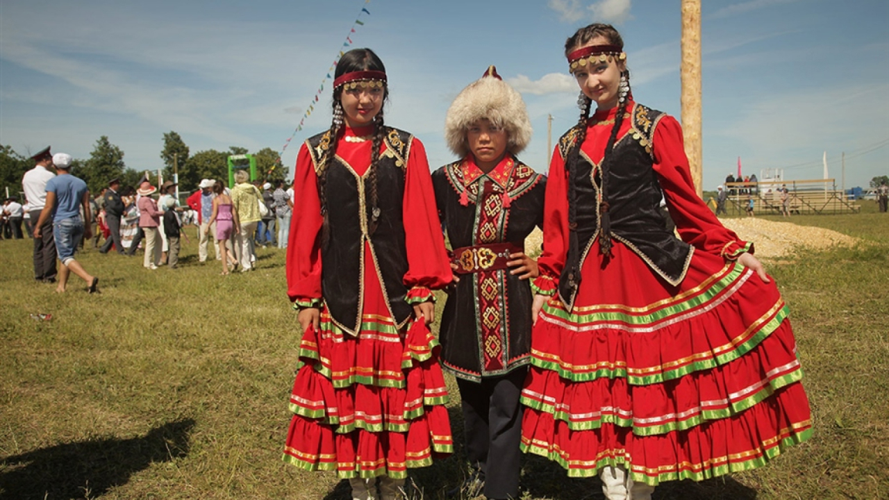
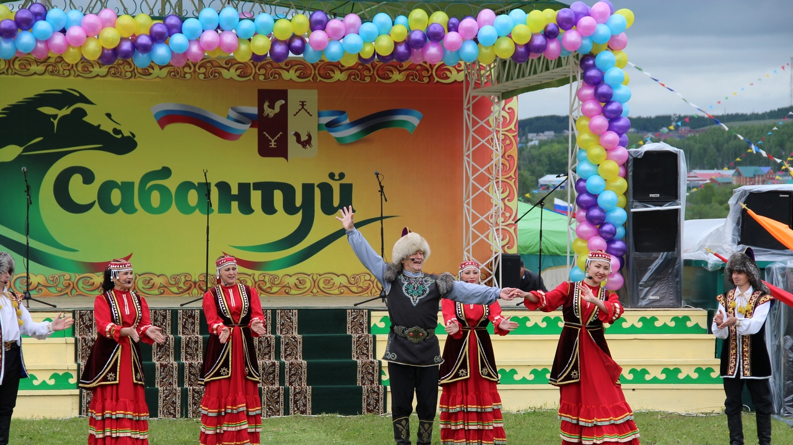
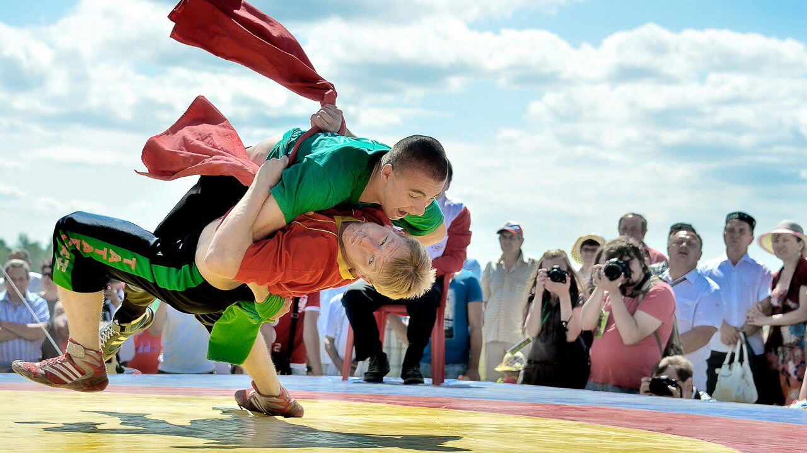

Культура и традиции в Республике Башкортостан
Культура и традиции Республики Башкортостан представляют собой богатый и разнообразный мир, отражающий
сочетание этносов и культурных влияний. Регион обладает многогранной историей, национальными традициями
и языковым многообразием.
Башкирский язык является официальным языком в Республике Башкортостан. Этот тюркский язык, близкий к
татарскому и казахскому, служит важным элементом национальной идентичности. Большинство башкир владеют
своим родным языком, и его сохранение является одним из приоритетов в культурной политике региона. В то
же время русский язык широко распространен и используется в повседневной коммуникации, образовании и
деловой сфере. Этот языковой плаустро подчеркивает многонациональный характер республики, где башкиры,
татары, русские, чувашы и другие этнические группы соседствуют и взаимодействуют.
Этническое разнообразие является одной из значимых черт культуры Республики Башкортостан. В каждой
этнической группе существуют уникальные традиции, обычаи, искусство и язык, которые вносят свой вклад в
богатство культурного наследия региона. Этот синтез различных культурных элементов создает уникальное
этническое разнообразие и формирует устойчивое сообщество, где каждая группа вносит свой вклад в общую
мозаичную культурную картину Республики Башкортостан.
Башкирские традиционные костюмы являются неотъемлемой частью национальной культуры и творчества. Эти
костюмы отражают богатство и красоту башкирского этнографического наследия. Обычно они украшены
разнообразными вышивками, национальными узорами и расшиты элементами национального орнамента. Башкирские
костюмы также известны своей функциональностью, что делает их подходящими для различных праздников и
торжеств. Песни и танцы занимают важное место в башкирской культуре. Народные песни передают истории и
легенды, рассказывая о повседневной жизни, любви, природе и героических подвигах. Танцы, в свою очередь,
часто сопровождаются живописными и национальными костюмами, отражая особенности башкирской этнической
группы. Искусство башкирских ремесел, таких как выделка кожи и ткачество, является еще одним важным
элементом национальной культуры. Ручная работа, используемая при создании традиционных изделий, придает
каждому из них уникальность и индивидуальность. Эти ремесла передаются из поколения в поколение,
сохраняя традиции и способствуя сохранению уникального башкирского искусства.

Сабантуй — веселый и теплый башкирский праздник, служащий символом радости и общности. Этот традиционный
праздник весны отмечается после завершения сельскохозяйственных работ и включает в себя разнообразные
мероприятия, наполненные культурным богатством и традициями. Сабантуй сопровождается национальными
играми, конкурсами, танцами и песнями, отражая богатство башкирской культуры. Традиционные обряды, такие
как поднятие майки и цветочные церемонии, придают празднику особый характер и важность. Кулинарные
угощения, включая блюда, такие как чак-чак, делятся и наслаждаются в кругу семьи и друзей. Сабантуй —
это не только праздник природы и труда, но и яркое выражение культурного единства и традиций башкирского
народа.

Башкирская кухня представляет собой настоящее кулинарное путешествие, насыщенное вкусами и традициями.
Местные продукты, богатые разнообразием природных ресурсов, вдохновляют на создание блюд, которые
являются неотъемлемой частью культурного наследия этноса.
Манты — это своего рода кулинарное искусство, где тонкое тесто объединяется с разнообразными начинками.
Мясные, овощные или смешанные варианты создают разнообразие вкусов, а паровая проварка сохраняет
влажность и питательность.
Эчпочмак — это вкуснейший мясной пирог, знаменующий особые события. Тонкое тесто, начиненное мясом,
картошкой и луком, приобретает хрустящую корку при запекании, а сочетание ингредиентов создает
насыщенный вкус.
Чак-чак — сладкое воплощение башкирской кулинарии. Этот десерт, состоящий из обжаренного теста, затем
смешанного с медово-сахарным сиропом, образует характерные кусочки. Украшается чак-чак медом, орехами
или сухофруктами, придавая ему не только вкус, но и красочный вид.
Мясные блюда, супы и хлебобулочные изделия также занимают почетное место в башкирской кулинарии. Местные
специи, такие как кориандр и тысячелистник, добавляют уникальные нотки вкуса. Традиционные рецепты
передаются из поколения в поколение, сохраняя аутентичность и вкусовое богатство башкирской кухни,
ставшей важной частью культурного наследия этноса.
В спорте Республики Башкортостан выделяется национальная башкирская борьба, известная как куреш. Этот
вид спорта имеет глубокие исторические корни и является частью национальной культуры. Куреш — это
борьба, в которой участники используют специальные приемы, такие как броски и удары, стараясь подчинить
противника. Этот вид борьбы пользуется популярностью не только среди профессиональных спортсменов, но и
среди любителей, часто представляясь на различных праздниках и соревнованиях. Помимо национальной
борьбы, в регионе также активно занимаются популярными видами спорта, такими как футбол, баскетбол,
хоккей и другие, что способствует разнообразию спортивной культуры и способствует развитию физической
активности в республике.

Историческое наследие Республики Башкортостан является богатым источником культурного наследия,
включающего разнообразные памятники архитектуры и исторические сооружения. Крепости, мечети и мавзолеи
представляют собой важные элементы этого наследия, обогащая культурный ландшафт региона.
Крепости, возведенные в разные исторические периоды, являются свидетельством оборонительной архитектуры
и стратегического значения определенных территорий. Они отражают исторические события, связанные с
защитой региона от внешних угроз.
Мечети, как религиозные постройки, представляют собой центры духовной жизни и являются символами
исламской культуры в регионе. Их архитектурные особенности и декоративные элементы часто отражают
традиции и стиль определенной эпохи.
Мавзолеи, возводимые в память о выдающихся личностях, стали частью исторического и культурного
ландшафта. Эти сооружения служат не только местами поклонения, но и источниками знаний о важных фигурах
и событиях в истории региона.
Общий облик культуры и традиций Республики Башкортостан является результатом взаимодействия различных
культурных элементов, отражая многонациональный характер общества. Историческое наследие играет ключевую
роль в формировании уникального культурного портрета региона, подчеркивая его историческое богатство и
разнообразие.